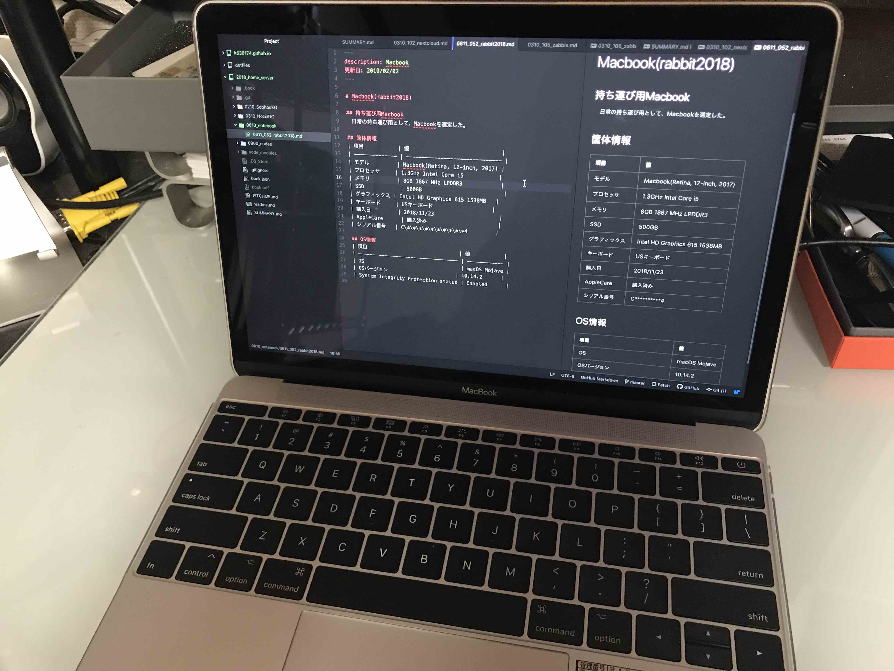

Macbook(rabbit2018)

持ち運び用Macbook
日常の持ち運び用として、Macbookを選定した。
筐体情報
| 項目 | 値 |
|---|---|
| モデル | Macbook(Retina, 12-inch, 2017) |
| プロセッサ | 1.3GHz Intel Core i5 |
| メモリ | 8GB 1867 MHz LPDDR3 |
| SSD | 500GB |
| グラフィックス | Intel HD Graphics 615 1538MB |
| キーボード | USキーボード |
| 購入日 | 2018/11/23 |
| AppleCare | 購入済み |
| シリアル番号 | C**********4 |
OS情報
| 項目 | 値 |
|---|---|
| OS | macOS Mojave |
| OSバージョン | 10.14.2 |
| System Integrity Protection status | Enabled |